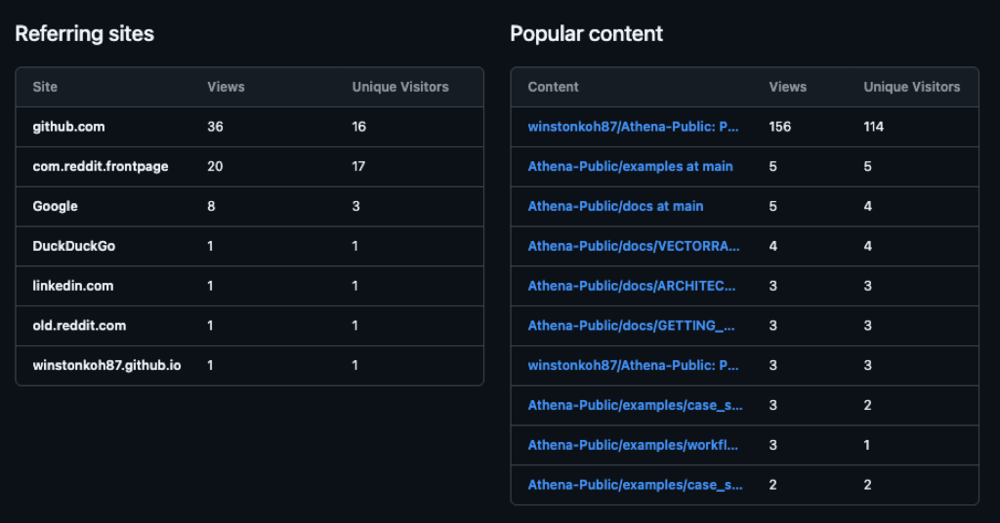

📋 Executive Summary
- Problem: Most project launches are sterile—anonymous accounts, corporate polish, forgettable hooks.
- Solution: Launch from a 10-year-old Reddit account with an absurd username, paired with a density-signaling headline ("After 511 sessions...").
- Outcome: 12K+ organic reach, 750 unique cloners, a 5:1 share-to-upvote ratio—and a validated thesis on "The Authenticity Premium."
I had been building this system in private for months. On January 1st, 2026, I pushed the repo public and announced it on Reddit.
No paid ads. No influencer outreach. Just a Reddit post from an account with a username that would make my mother cry.
Within 48 hours, the main post hit 9.9K views, the crossposts added another 2K+, and unique cloners on GitHub jumped to 750.
This is the story of that launch—and the counter-intuitive lesson it taught me about signal and authenticity in an age where AI can polish anything to death.
📊 The Numbers (14-Day Window)
Main post: 9.9K views | r/vibecoding: 1.3K | r/ArtificialSentience: 791 | r/ClaudeCode: 602

Figure 1: Reddit Post Insights — organic reach across US (37%), Germany (6%), UK (5%).
The Decision: Professional Account or... Bang My Pussy?
When you're about to launch a serious technical project to the world, convention says: create a clean, professional account. Scrub your history. Look respectable. Don't give people a reason to dismiss you.
My main Reddit account is u/BangMyPussy. It's 10+ years old. It has a...
colourful history.
I had a choice:
- The "Safe" Play: Create a new account like
u/WinstonKoh_Official. Look corporate. Be forgettable. - The "Risky" Play: Ship it from the same account I use for everything else. Let the mismatch speak for itself.
I chose the risky play. And that choice—combined with the title's specificity and the project's density—may have been a critical factor in cutting through the noise.
The Authenticity Equation
Here is the hypothesis I was (unconsciously) testing:
💡 The Rule
Competence + Risk = Authenticity (Signal)
Incompetence + Risk = Cringe (Noise)
If my project had been a half-baked ChatGPT wrapper demo, the username would have been the nail in the coffin. I would have been dismissed as a troll.
But because the project was undeniably dense—511 sessions, 246 protocols, a real architecture—the username acted as a Trust Multiplier. It signaled: "I am so good at this that I don't need to play your corporate signaling games."
The top comment on the post validated this perfectly:
"Daring move, connecting your GitHub and identity with your Reddit username, u/bangmypussy. But this looks cool, I'll check it out! Happy new year."
The "daring move" was the signal. In a world drowning in AI-generated, polished-to-death content, the raw, risky, human thing cuts through the noise.
The Schlep Hook: "After 511 Sessions..."
The headline was not "I built an AI agent." Everyone is building an AI agent.
The headline was:
"After 511 sessions co-developing with AI, I open-sourced my personal knowledge system."
This leverages what I call Schlep Blindness. Most people are lazy. They don't want to do the repetitive, boring, un-glamorous work. When you show proof that you did do that work—511 sessions worth—it creates instant authority.
The number is specific. It's not "over 500." It's "511." Specificity signals truth.

Figure 2: GitHub Traffic (14-day window) — 1,260 clones from 750 unique users. The spike on 12/23 was early organic discovery; the larger spike (12/31-Jan 1) is the Reddit announcement.
The Dark Social Signal: Shares > Upvotes
The most interesting metric wasn't the views. It was the share ratio.
The post had 12 upvotes but 61 shares. That's a 5:1 ratio.
Normal Reddit ratio is closer to 1 share : 10 upvotes.
What does this mean?
People weren't just scrolling past and clicking a button. They were saving it. They were sending it to their Slack channels, their Discord servers, their private WhatsApp groups with the message: "Yo, check this out."
This is "Dark Social"—traffic that doesn't show up in referrer logs because it's shared via private channels. And it's the highest quality signal you can get. It means people found it useful, not just interesting.
Figure 3: Where the traffic came from. Note the reddit.com referral, but also direct traffic from github.com (people finding it organically).
The Strategic Takeaway
We are entering an era where AI can generate a "professional-looking" anything in seconds. A polished LinkedIn post. A slick landing page. A corporate headshot.
This means polished = synthetic.
The signal is now in the edges. The weird username. The 3am typo. The specific number. The thing that a corporation or a marketing team would never approve.
🛡️ The Authenticity Premium
- Rule: Do not scrub the "edges" off your identity. The edges are the proofs of humanity.
- Corollary: "Safe" is now the riskiest move. If you look like everyone else, you are everyone else.
- Prerequisite: This only works if you have substance. Edges without competence = cringe.
🔒 Privacy Note
The public repo is sanitized. Real session logs, personal data, and API keys remain local. What's public are example templates, protocols, and scripts—not my actual cognitive history.
What's Next?
Athena is now public. People are cloning it. Some are contributing. The system continues to grow.
If you want to see what 560+ sessions of AI-augmented thinking looks like, the repo is open: